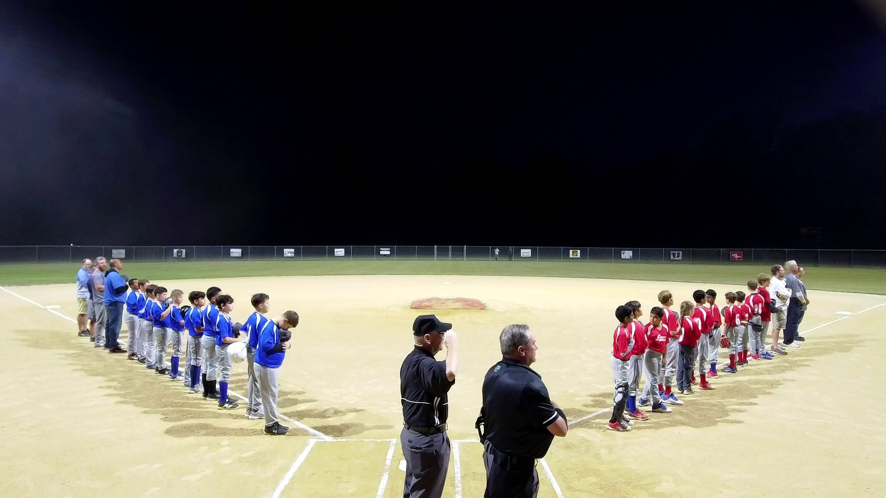
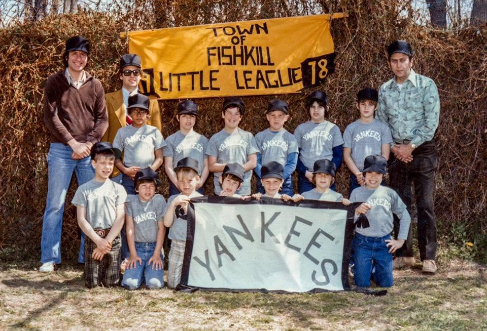
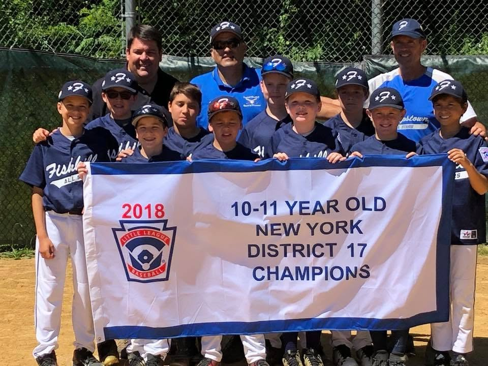
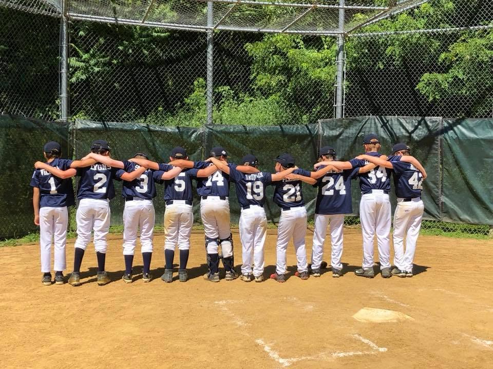

Founded in 1954
Generations of Fishkill families have learned teamwork, sportsmanship and community through Fishkill Little League.
From Geering Park to Shepheard Memorial Park, the league has grown alongside the community it serves.
Championship Moments
Fishkill teams have represented the league with pride through district and tournament competition for decades. The photo shows Fishkill’s 2018 District 17 champions.


What Never Changes
Friendships, teamwork, volunteerism and community remain at the heart of every Fishkill Little League season.
Softball, Night Games and the Next Milestone

Softball is part of Fishkill’s Little League history. Past teams helped build the tradition that today’s softball players carry forward.
The first games under the lights were a milestone at the ballpark. Today, evening games continue that tradition at Shepheard Memorial Park.
Fishkill Little League marks its 75th anniversary in 2029. If you have a team photo, a memory of an early night game or a story about a volunteer who helped build the league, share it with us.